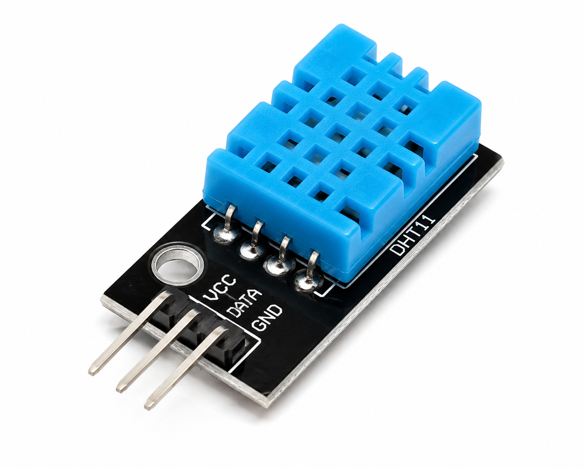
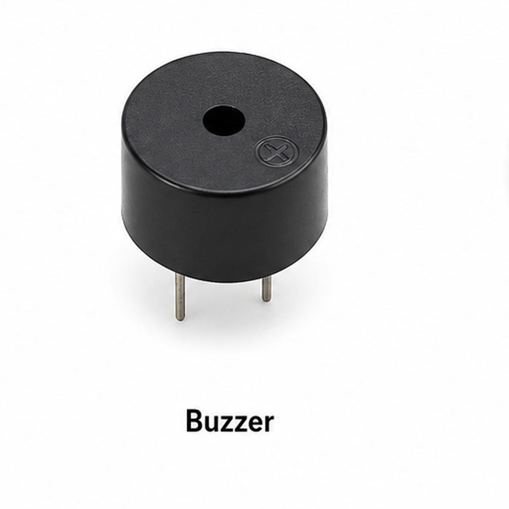
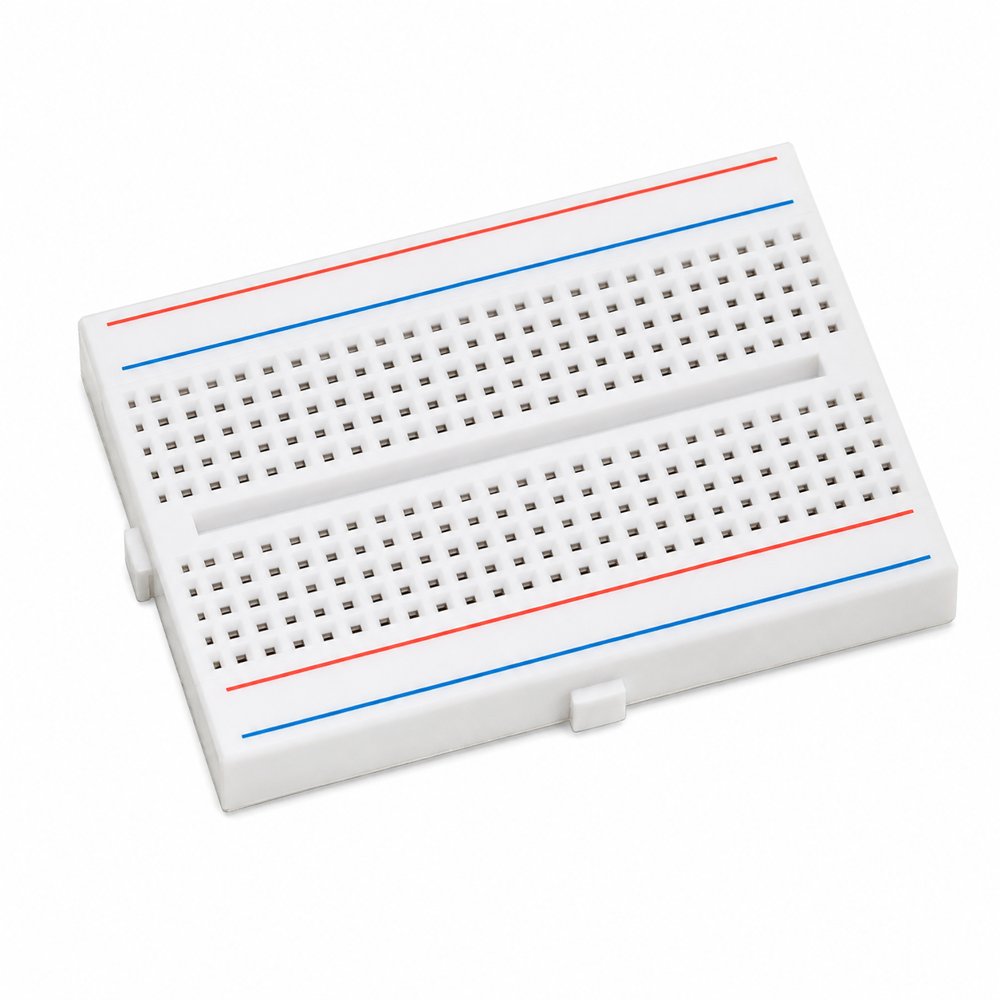

Multi_Sensor_Industrial_Warning_Panel.ino
Multi-Sensor Industrial Warning Panel
To combine gas, vibration, temperature and humidity monitoring into one Arduino-based industrial warning panel.
The Arduino reads MQ-2 gas level on A0, vibration on D2, and DHT11 temperature/humidity on D4.
During normal conditions the green LED remains ON. Gas, vibration, high temperature, or a DHT11 error activates the red LED and buzzer while the 16×2 I2C LCD shows the warning.

Main controller.

Measures gas/smoke level.

Detects vibration.

Measures temperature and humidity.

Displays status and warnings.

Audible warning.

Warning indicator.

Normal-state indicator.

LED current limiting.

Circuit interconnections.

Used to assemble the circuit.
| Component | Pin / Connection | Arduino UNO R3 |
|---|---|---|
| MQ-2 | AO | A0 |
| MQ-2 | VCC / GND | 5V / GND |
| Vibration Sensor | DO | D2 |
| DHT11 | DATA | D4 |
| 16×2 I2C LCD | SDA / SCL | A4 / A5 |
| Buzzer | + | D8 |
| Red LED | Anode through 220Ω | D9 |
| Green LED | Anode through 220Ω | D10 |
| All powered modules | GND | GND |

Arduino Experiment · Code Review
MULTI-SENSOR INDUSTRIAL WARNING PANEL · Select a step to highlight the matching code lines.
Choose a step. The matching code will light up on the left.
The sketch loads I2C LCD and DHT11 support.
The SOP uses gasThreshold = 400 and temperatureThreshold = 40.0°C as starting values. Calibrate them for the actual sensors and environment.
Try it: Let the MQ-2 warm up before judging gas readings.
Normal conditions show SYSTEM NORMAL with the green LED ON. Any gas, vibration or high-temperature condition activates the red LED, buzzer and an LCD warning.
The completed system operates as a basic educational multi-sensor industrial warning panel.